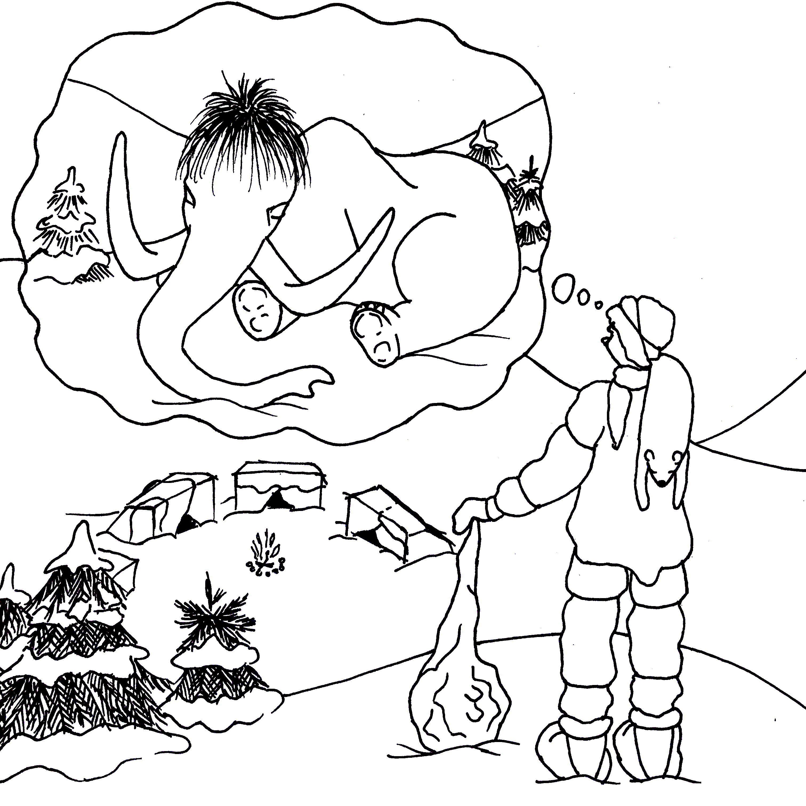
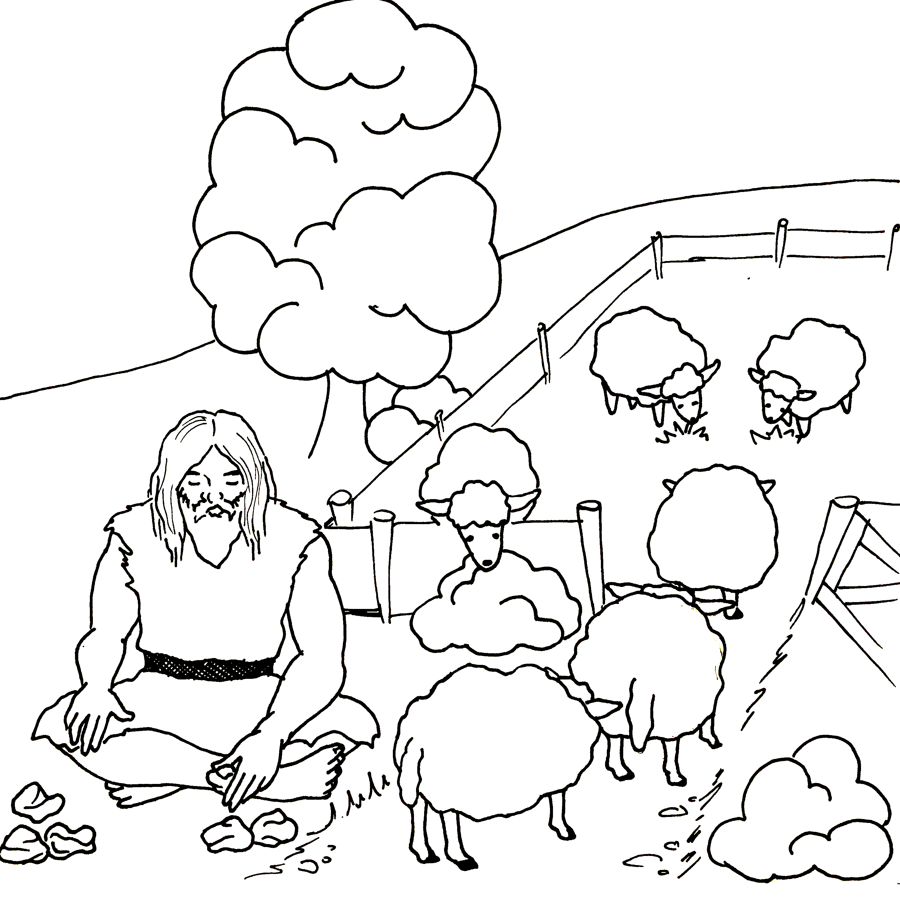

Bolo to dávno. Veľmi, veľmi, veľmi dávno. Na Zemi bola zima, potravy bolo málo a všade číhalo nebezpečenstvo. Zvieratá sa v malých skupinkách popásali na riedkych trsoch trávy. Vyhladovaní a vymrznutí predátori striehli na svoje obete. Každý sa snažil prežiť. Vládla doba ľadová. Zostať mohli iba najsilnejší. Alebo najmúdrejší.
Kdesi za kopcami stúpal slabučký pásik dymu. To boli ľudia, ale bolo ich málo. Nezdružovali sa do veľkých skupín. Chodili z miesta na miesto, zberali čučoriedky, maliny, zelinky a všeličo iné, čo nestihol zničiť chlad a čo aj napriek veľkej zime chcelo rásť. Niekedy sa im podarilo chytiť mamuta a potom si vystrojili hostinu. Náčelník doniesol najnovšiu technologickú vychytávku tej doby - oheň. Ľudia odrali mamuta, nožom z pazúrika ho nakrájali, kúsky si upiekli a tešili sa, ako im je dobre.
Takto vyzerala Zem a ľudia, keď začal príbeh matematiky. A vlastne ani nezačal, on tu bol odjakživa, ale my sme ho objavili až niekedy v dobe kamennej. Najprv ľudia rozlišovali, či je niečoho veľa alebo málo. Keď chytili veľkého mamuta, bolo treba pozvať na hostinu veľa ľudí (aby sa mamut nepokazil) a keď chytili malého, tak sa hostiny zúčastnilo málo ľudí (aby na každého vyšlo).

Obr. 1.: Z veľkého zvieraťa sa ľudia viac najedli ako z malého. Tak sa naučili rozlišovať, či je niečoho viac alebo menej.
Loviť zvieratá bolo náročné. Lovci museli čakať v snehu a v mraze a častokrát žiadne zviera ani neprišlo. Ľudia rozmýšľali, ako situáciu zjednodušiť. Časom zistili, že niektoré zvieratá sa dajú skrotiť a tak ich začali chovať v stádach. Samozrejme nechovali hneď tisíce kusov, zvierat mali len zopár. Mäso na zimu bolo zabezpečené. Lenže to sa stále jesť nedá, stravu treba obmieňať. Ľudia vedeli, že niektoré rastliny sa dajú jesť. Spozorovali, že keď niektoré z nich uschnú, tak vydržia dlhšie. Začali si robiť zásoby.
S chovom zvierat, zberaním rastlín a podobnými činnosťami prišli otázky. Koľko mám zvierat? Budú mi stačiť na zimu? Kedy sa mám vydať pod hory nazberať čučoriedky, kedy rastú lesné jahody a kedy repíček, čo lieči rany? Koľko mi toho treba na zimu? Človek dostal do vienka rozum, a tak mohol nájsť odpovede. Začal počítať kusy dobytku a vždy vedel, či sa mu nejaké zviera nezatúlalo. Naučil sa rátať dni a správne vystihol dobu, kedy rastie repík, kedy jahody a kedy čučoriedky.
Zaujímavé, že k rovnakému poznaniu prišli národy na všetkých kontinentoch, bez toho aby si odovzdávali vedomosti medzi sebou. V Austrálií domorodí aborigéni vedeli počítať, že 1,2 a veľa. V Amerike to Indiáni dotiahli až po 6.
No bolo treba zrátať aj veci, ktorých bolo viac ako 6. Ľudia začali používať na počítanie prsty, kamienky, mušle a všetko podobné, čo im prišlo pod ruku. Napríklad počítanie oviec fungovalo tak, že ich nechali ísť po jednej cez bránku košiara a za každú prejdenú ovcu odložili jeden kamienok. Keď pastierovi kamienky ostali, vedel, že je zle. Indiáni v Amerike zasa používali uzlíky na špagáte. Jeden kus, jeden uzlík.

Obr. 2.: Praveký pastier počíta ovce. Jedna ovca, jeden kameň.
Vráťme sa však do Európy, konkrétne do Československa. Tu bol nájdený jeden z najstarších dôkazov toho, že ľudia počítali. Archeológovia vykopali holennú kosť mladého vlka, na ktorej boli spravené zárezy. Zárezov je 55 a sú usporiadané do pätíc. Štyri zvislé čiary sú preškrtnuté piatou. Rovnaké počítanie niekedy používame aj dnes. Vedci sa domnievajú, že naši dedkovia si zaznačovali ulovené zvieratá. Zárezy v kosti boli sofistikovanejší spôsob, ako si zaznamenať počet. Prsto bolo málo, kamienky sa mohli postrácať, mušle polámať. Pri väčších počtoch bolo lepšie so sebou nosiť kosť, ako hŕbu ťažkých kameňov. Kosť bola praktickejšia a znamenala ďalší krôčik v myslení ľudí, pretože počty mali "napísané".
V bohatších rodinách prestávali zárezy na kostiach stačiť. Rôznych predmetov mali už tak veľa, že zárezy sa stali neprehľadnými. Zapisovanie vylepšili tak, že si vypaľovali kúsky hliny, ktoré mali určitý tvar a boli do nich vyryté čiarky, ktoré predstavovali počet. Čiarky boli usporiadané do pätíc. Jeden kúsok symbolizoval konkrétny počet konkrétnej veci. Napríklad trojuholníkový kúsok hliny znamenal nejaký počet zvierat v stáde. Iná značka reprezentovala misky s nazberaným ovocím, iná tigrie kože a iná počet členov rodiny. Každá vec a každý počet mal nejakú svoju značku.
Pre nás nepatrná vec, ako používanie značiek pre napočítané predmety, mala obrovský dopad na ľudstvo. Znamenala totiž, že človek dokázal spojiť napočítané veci s nejakým symbolom. Človek dokázal myslieť abstraktne. Na základe písania značiek do hliny vzniklo písmo.
Hlinenými značkami sa dostávame do roku 3000 pr. Kr.. Končí sa doba ľadová. Podnebie sa otepľuje, drsné podmienky poľavujú, zem vydá viac úrody. Na brehoch riek vznikajú prvé poľnohospodárske usadlosti, ľudia začínajú mať všetkého viac. Kamienky, zárezy a ani hlinené doštičky už nestačia. Ľudia musia vymyslieť niečo nové.[1]
Zdroje
[1] BURTON, M. D.: The History of Mathematics: An Introduction. 7. vyd. New York: McGraw-Hill, 2011. 1-10 s. ISBN 978–0–07–338315–6